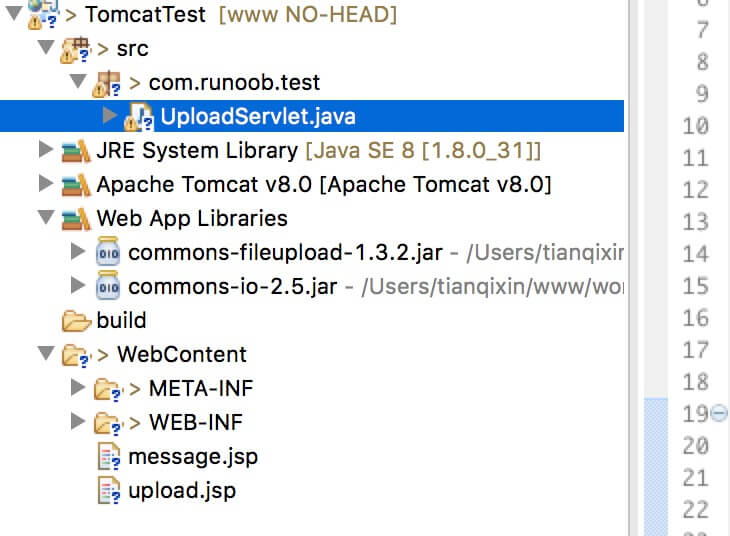
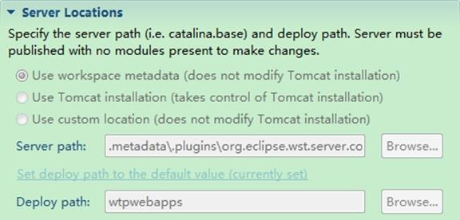
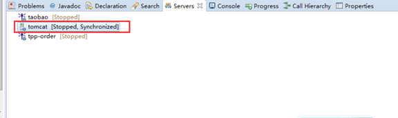

Servlet ファイルアップロード
Servlet は HTML の form タグと組み合わせて使用でき、ユーザーがサーバーにファイルをアップロードできるようにします。アップロードされるファイルは、テキストファイル、画像ファイル、または任意のドキュメントです。
この記事で使用するファイルは次のとおりです：
- upload.jsp：ファイルアップロードフォーム。
- message.jsp：アップロード成功後に遷移するページ。
- UploadServlet.java：アップロード処理用 Servlet。
- 導入が必要な jar ファイル：commons-fileupload-1.3.2、commons-io-2.5.jar。
構成図は次のとおりです：

注意：Servlet 3.0 にはファイルアップロード機能が組み込まれており、開発者は Commons FileUpload コンポーネントをプロジェクトにインポートする必要がなくなりました。
次に詳しく説明します。
ファイルアップロードフォームを作成する
以下の HTML コードはファイルアップロードフォームを作成します。以下の点に注意してください：
- フォームmethod属性は次のように設定する必要がありますPOSTメソッド。GET メソッドは使用できません。
- フォームenctype属性は次のように設定する必要がありますmultipart/form-data.
- フォームaction属性は、バックエンドサーバーでファイルアップロードを処理する Servlet ファイルに設定する必要があります。次の例ではUploadServletServlet を使用してファイルをアップロードします。
- 単一のファイルをアップロードするには、属性 type="file" を持つ単一の <input .../> タグを使用する必要があります。複数のファイルのアップロードを許可するには、name 属性の値が異なる複数の input タグを含めてください。入力タグはそれぞれ異なる name 属性の値を持ちます。ブラウザは各 input タグに参照ボタンを関連付けます。
upload.jsp ファイルのコードは次のとおりです：
<%@ page language="java" contentType="text/html; charset=UTF-8"
pageEncoding="UTF-8"%>
<!DOCTYPE html PUBLIC "-//W3C//DTD HTML 4.01 Transitional//EN"
"http://www.w3.org/TR/html4/loose.dtd">
<html>
<head>
<meta http-equiv="Content-Type" content="text/html; charset=UTF-8">
<title>文件上传实例 - 菜鸟教程</title>
</head>
<body>
<h1>文件上传实例 - 菜鸟教程</h1>
<form method="post" action="../TomcatTest/UploadServlet" enctype="multipart/form-data">
选择一个文件:
<input type="file" name="uploadFile" />
<br/><br/>
<input type="submit" value="上传" />
</form>
</body>
</html>
バックエンド Servlet を記述する
以下は UploadServlet のソースコードで、ファイルアップロードを処理します。その前に、依存パッケージがプロジェクトの WEB-INF/lib ディレクトリに導入されていることを確認してください：
- 以下の例は FileUpload に依存しているため、クラスパスに最新バージョンが存在することを必ず確認してください。commons-fileupload.x.x.jarファイル。以下からダウンロードできます。http://commons.apache.org/proper/commons-fileupload/ダウンロード。
- FileUpload は Commons IO に依存しているため、クラスパスに最新バージョンが存在することを必ず確認してください。commons-io-x.x.jarファイル。以下からダウンロードできます。http://commons.apache.org/proper/commons-io/ダウンロード。
このサイトが提供する2つの依存パッケージを直接ダウンロードできます：
UploadServlet のソースコードは次のとおりです：
package com.runoob.test;
import java.io.File;
import java.io.IOException;
import java.io.PrintWriter;
import java.util.List;
import javax.servlet.ServletException;
import javax.servlet.annotation.WebServlet;
import javax.servlet.http.HttpServlet;
import javax.servlet.http.HttpServletRequest;
import javax.servlet.http.HttpServletResponse;
import org.apache.commons.fileupload.FileItem;
import org.apache.commons.fileupload.disk.DiskFileItemFactory;
import org.apache.commons.fileupload.servlet.ServletFileUpload;
/**
* Servlet implementation class UploadServlet
*/
@WebServlet("/UploadServlet")
public class UploadServlet extends HttpServlet {
private static final long serialVersionUID = 1L;
// 上传文件存储目录
private static final String UPLOAD_DIRECTORY = "upload";
// 上传配置
private static final int MEMORY_THRESHOLD = 1024 * 1024 * 3; // 3MB
private static final int MAX_FILE_SIZE = 1024 * 1024 * 40; // 40MB
private static final int MAX_REQUEST_SIZE = 1024 * 1024 * 50; // 50MB
/**
* 上传数据及保存文件
*/
protected void doPost(HttpServletRequest request,
HttpServletResponse response) throws ServletException, IOException {
// 检测是否为多媒体上传
if (!ServletFileUpload.isMultipartContent(request)) {
// 如果不是则停止
PrintWriter writer = response.getWriter();
writer.println("Error: 表单必须包含 enctype=multipart/form-data");
writer.flush();
return;
}
// 配置上传参数
DiskFileItemFactory factory = new DiskFileItemFactory();
// 设置内存临界值 - 超过后将产生临时文件并存储于临时目录中
factory.setSizeThreshold(MEMORY_THRESHOLD);
// 设置临时存储目录
factory.setRepository(new File(System.getProperty("java.io.tmpdir")));
ServletFileUpload upload = new ServletFileUpload(factory);
// 设置最大文件上传值
upload.setFileSizeMax(MAX_FILE_SIZE);
// 设置最大请求值 (包含文件和表单数据)
upload.setSizeMax(MAX_REQUEST_SIZE);
// 中文处理
upload.setHeaderEncoding("UTF-8");
// 构造临时路径来存储上传的文件
// 这个路径相对当前应用的目录
String uploadPath = request.getServletContext().getRealPath("./") + File.separator + UPLOAD_DIRECTORY;
// 如果目录不存在则创建
File uploadDir = new File(uploadPath);
if (!uploadDir.exists()) {
uploadDir.mkdir();
}
try {
// 解析请求的内容提取文件数据
@SuppressWarnings("unchecked")
List<FileItem> formItems = upload.parseRequest(request);
if (formItems != null && formItems.size() > 0) {
// 迭代表单数据
for (FileItem item : formItems) {
// 处理不在表单中的字段
if (!item.isFormField()) {
String fileName = new File(item.getName()).getName();
String filePath = uploadPath + File.separator + fileName;
File storeFile = new File(filePath);
// 在控制台输出文件的上传路径
System.out.println(filePath);
// 保存文件到硬盘
item.write(storeFile);
request.setAttribute("message",
"文件上传成功!");
}
}
}
} catch (Exception ex) {
request.setAttribute("message",
"错误信息: " + ex.getMessage());
}
// 跳转到 message.jsp
request.getServletContext().getRequestDispatcher("/message.jsp").forward(
request, response);
}
}
message.jsp ファイルのコードは次のとおりです：
<%@ page language="java" contentType="text/html; charset=UTF-8"
pageEncoding="UTF-8"%>
<!DOCTYPE html PUBLIC "-//W3C//DTD HTML 4.01 Transitional//EN"
"http://www.w3.org/TR/html4/loose.dtd">
<html>
<head>
<meta http-equiv="Content-Type" content="text/html; charset=UTF-8">
<title>文件上传结果</title>
</head>
<body>
<center>
<h2>${message}</h2>
</center>
</body>
</html>
Servlet をコンパイルして実行する
上記の Servlet UploadServlet をコンパイルし、web.xml ファイルに必要なエントリを作成します。次のとおりです：
<?xml version="1.0" encoding="UTF-8"?>
<web-app xmlns:xsi="http://www.w3.org/2001/XMLSchema-instance"
xmlns="http://java.sun.com/xml/ns/javaee"
xmlns:web="http://java.sun.com/xml/ns/javaee/web-app_2_5.xsd"
xsi:schemaLocation="http://java.sun.com/xml/ns/javaee
http://java.sun.com/xml/ns/javaee/web-app_2_5.xsd"
id="WebApp_ID" version="2.5">
<servlet>
<display-name>UploadServlet</display-name>
<servlet-name>UploadServlet</servlet-name>
<servlet-class>com.runoob.test.UploadServlet</servlet-class>
</servlet>
<servlet-mapping>
<servlet-name>UploadServlet</servlet-name>
<url-pattern>/TomcatTest/UploadServlet</url-pattern>
</servlet-mapping>
</web-app>
では、上で作成した HTML フォームを使用してファイルをアップロードしてみてください。ブラウザで http://localhost:8080/TomcatTest/upload.jsp にアクセスすると、デモは次のようになります：

tianqixin
429***967@qq.com
参考アドレス
一般的なファイルに対して a タグを直接使用する場合、次のコードのようになります。ブラウザは jpg や txt ファイルを解析できるため、直接ダウンロードされず、他の Web ページで開かれます：
直接ダウンロードを実現したい場合は、Servlet を介して操作できます。簡単な HTML ページを作成しました。
私は download のためにサーブレットを登録しました。xml の記述は次のとおりです：
<servlet> <servlet-name>DownloadServlet</servlet-name> <servlet-class>com.response.download.DownloadServlet</servlet-class> </servlet> <servlet-mapping> <servlet-name>DownloadServlet</servlet-name> <url-pattern>/download</url-pattern> </servlet-mapping>リクエスト方式が GET 方式なので、DownloadServlet クラスで doGet メソッドをオーバーライドするだけで済みます。コードの実装は次のとおりです：
public void doGet(HttpServletRequest request, HttpServletResponse response) throws ServletException, IOException { //获取文件名 String filename=request.getParameter("name"); //防止读取name名乱码 filename=new String(filename.getBytes("iso-8859-1"),"utf-8"); //在控制台打印文件名 System.out.println("文件名："+filename); //设置文件MIME类型 response.setContentType(getServletContext().getMimeType(filename)); //设置Content-Disposition response.setHeader("Content-Disposition", "attachment;filename="+filename); //获取要下载的文件绝对路径，我的文件都放到WebRoot/download目录下 ServletContext context=this.getServletContext(); String fullFileName=context.getRealPath("/download/"+filename); //输入流为项目文件，输出流指向浏览器 InputStream is=new FileInputStream(fullFileName); ServletOutputStream os =response.getOutputStream(); /* * 设置缓冲区 * is.read(b)当文件读完时返回-1 */ int len=-1; byte[] b=new byte[1024]; while((len=is.read(b))!=-1){ os.write(b,0,len); } //关闭流 is.close(); os.close(); }tianqixin
429***967@qq.com
参考アドレス
大江
158***86046@126.com
参考アドレス
Eclipse で Tomcat サーバーの server location オプションを変更できない問題を解決する
問題の説明
Tomcat サーバーを編集するとき、server locations を編集できません。次の図のとおりです：

解決方法

Eclipse のメニューバーで window — show view — server を選択すると、サービスのパネルが表示されます。サービスのパネルには、設定済みの Tomcat と Tomcat 配下のプロジェクトが表示されます。
まず Tomcat 配下のすべてのプロジェクトを削除し、右クリックして clean を選択します。再度 Tomcat をダブルクリックして設定画面に入ると、Service Locations の各オプションが編集可能な状態になっているのが確認できます。
デフォルトのオプションは：Use workspace metadata（Tomcat インストールを変更しない）です。
オプションを Use Tomcat installation（Tomcat インストールを制御する）に変更すると、
Eclipse で起動した Tomcat サーバーでも Tomcat のホームページにアクセスできるようになります（例：http://localhost:8080 でアクセス）。そうしない場合、デフォルトでは Eclipse で起動した Tomcat サーバーでは Tomcat のホームページにアクセスできず、DOS で起動した Tomcat だけが Tomcat のホームページにアクセスできます。
大江
158***86046@126.com
参考アドレス
====*********999999
pro***ndhlf@163.com
Servlet 3.0+ でインポートされる fileupload パッケージは、以前の import ではなくなりました。次のように修正します：
====*********999999
pro***ndhlf@163.com